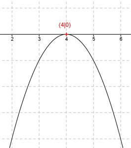

Aufgabe 14 Eine nach unten geöffnete Normalparabel hat ihren Scheitelpunkt im Punkt (4|0). Wie lautet ihre Funktionsgleichung?  Scheitelpunktform einer Parabel: f(x) = a(x- xs)2 + ys Nach unten geöffnete Normalparabel bedeutet: a = -1 Scheitelpunkt (4|0) bedeutet: Berührpunkt auf der x-Achse Punkt (4|0) in die Scheitelpunktform eingesetzt (xs = 4, ys = 0): f(x) = -(x - 4)2 + 0 Gesuchte Funktionsgleichung: f(x) = -(x- 4)2